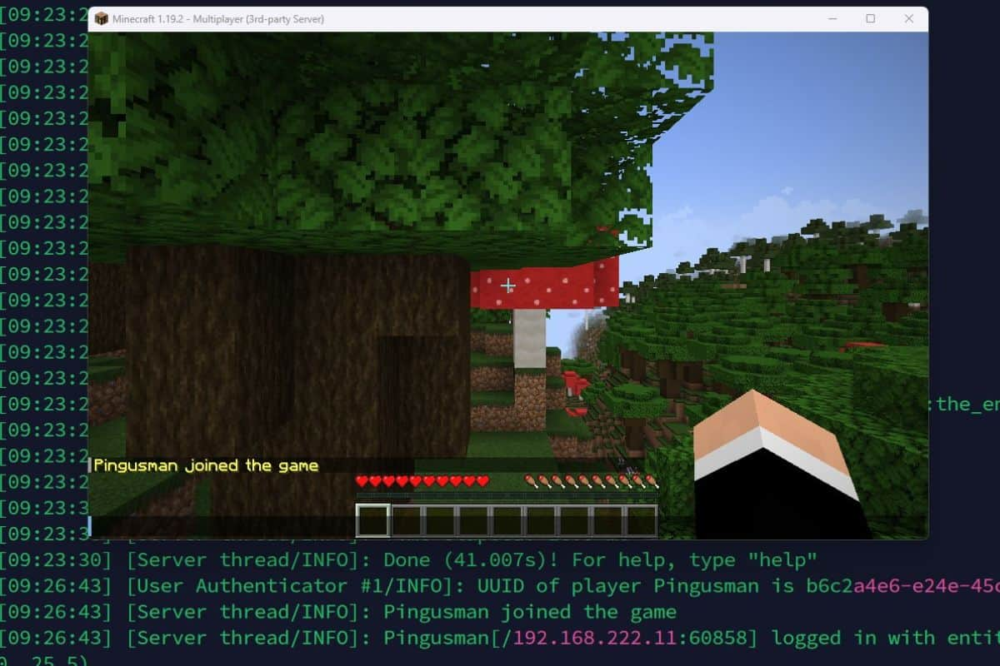
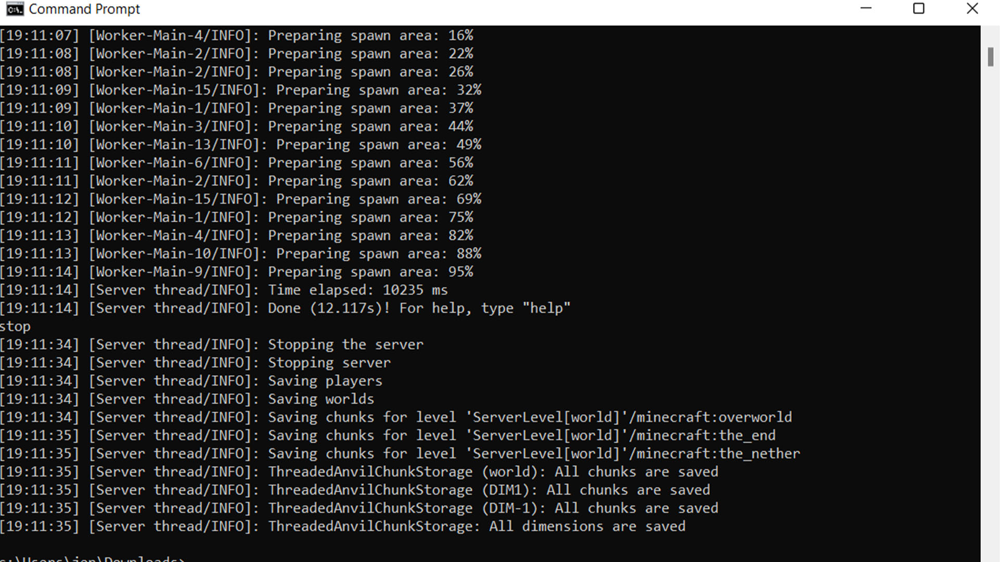

Serveur Minecraft
& Gestion Réseau
Mes débuts dans l'administration système : transformation d'un PC de bureau d'occasion en serveur de jeu performant sous Linux.

Serveur Multijoueur Actif

Gestion via Terminal SSH
📋 Contexte
Projet personnel avant BTS SIO.
1. La Genèse du Projet
Avant même de commencer mon BTS SIO, je voulais comprendre comment fonctionnait un serveur "pour de vrai". J'ai acheté un vieil ordinateur de bureau professionnel (Dell Optiplex) pour 100€ sur le marché de l'occasion avec un objectif simple : le transformer en serveur de jeu capable d'accueillir mes amis.
C'était mon premier vrai contact avec l'administration système. Plutôt que de simplement faire tourner un serveur sur Windows, j'ai voulu aller plus loin et découvrir Linux, comprendre le réseau, et mettre les mains dans le cambouis.
2. Immersion Linux & Command Line
Plutôt que d'utiliser Windows, j'ai installé une distribution Linux pour optimiser les performances de cette machine modeste.
Apprentissage du Terminal
Toute la gestion du serveur se faisait sans interface graphique (Headless), uniquement via SSH et le terminal. C'était un vrai défi au début, mais ça m'a forcé à apprendre les commandes essentielles rapidement.
Scripts & Optimisation
Création de scripts de démarrage (start.sh) avec allocation de RAM optimisée pour
Java (Xmx/Xms flags). J'ai dû comprendre comment Java gère la mémoire pour éviter les lags et
les crashes.
#!/bin/bash
# Script de démarrage optimisé
java -Xmx2G -Xms2G \
-jar paper.jar \
--nogui💡 Compétences acquises
- Navigation terminal Linux
- Gestion des processus
- Optimisation Java/JVM
- Scripts Bash
3. Paper-MC : Optimisation des Performances
Pour que le serveur tourne de manière fluide sur ce hardware modeste, j'ai utilisé Paper-MC, une version optimisée du serveur Minecraft vanilla.
Paper-MC offre des performances nettement supérieures grâce à :
- Optimisations du moteur de jeu
- Meilleure gestion de la mémoire
- Réduction de lag causé par les redstone/entités
- Compatibilité avec les plugins Bukkit/Spigot
C'était un choix technique crucial qui a permis d'avoir un serveur stable et réactif, même avec plusieurs joueurs connectés simultanément.
4. Défis Réseaux & DNS
Pour rendre le serveur accessible depuis l'extérieur, j'ai dû plonger dans la configuration réseau de ma box internet. C'était probablement la partie la plus technique et la plus formatrice du projet.
🔌 Port Forwarding (NAT)
Configuration de la règle NAT pour rediriger le trafic du port 25565 (TCP/UDP) vers l'IP statique locale de mon serveur Dell.
J'ai dû comprendre comment fonctionnait le NAT (Network Address Translation), configurer une IP locale statique pour éviter que l'adresse ne change, et créer les règles de redirection dans l'interface de ma box.
🌐 Gestion DNS
Pour ne pas avoir à donner mon IP publique (qui changeait), j'ai configuré un nom de domaine
dynamique (DDNS) pour avoir une adresse de connexion propre de type
play.monserveur.fr.
Cela permettait à mes amis de se connecter avec un nom facile à retenir, et le DDNS se chargeait de mettre à jour automatiquement l'IP en cas de changement.
📋 Fiche Technique
Matériel
Dell Optiplex
(Occasion 100€)
Compétences
• Installation Linux
• Configuration Réseau (NAT)
• Gestion DNS
Technologies
Linux • Paper-MC
SSH • Bash
DDNS